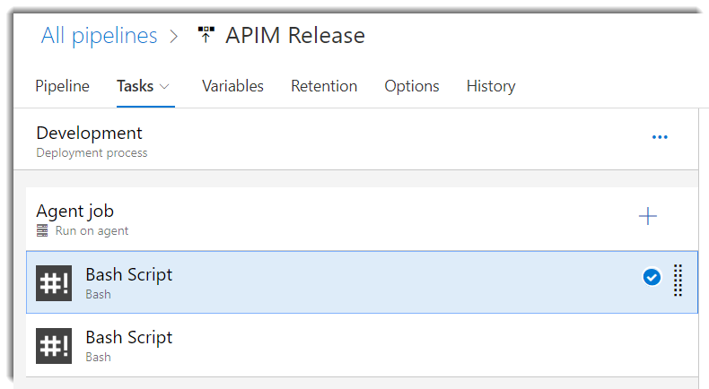
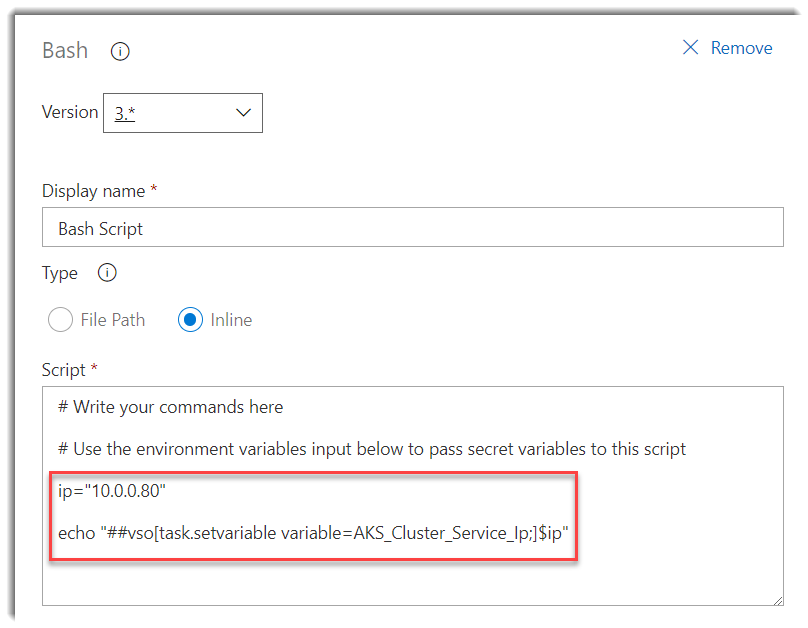
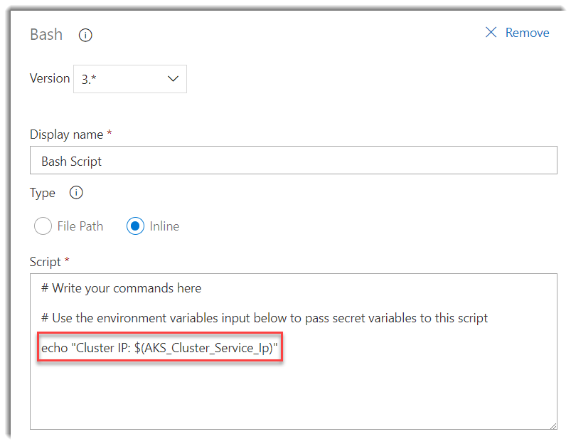
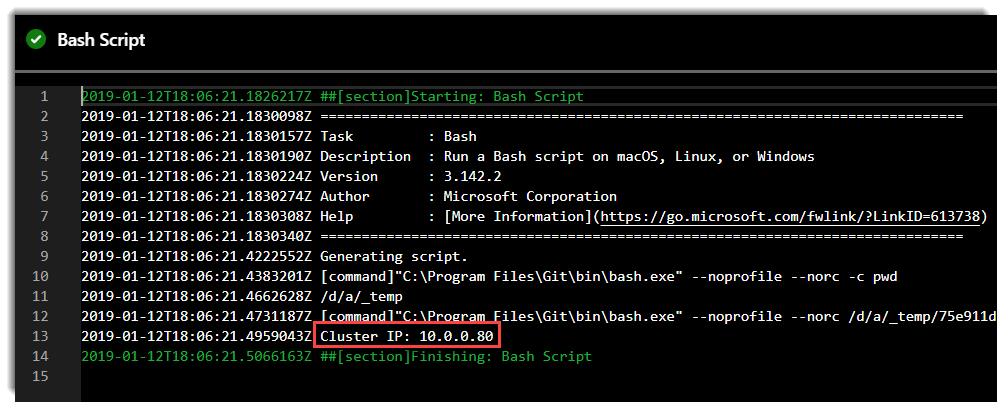

Currently I am building a pipeline that deploys a microservices solution in Azure Kubernetes Service (AKS). For example, I need to parse a kubectl output in a task to extract the cluster service ip dinamically in order to configure a DNS name for an nginx ingress controller. I want to return this cluster service ip back into a variable, so I can use in another task.
Configuring our Build or Release pipeline to test it
Add two bash script tasks to your build or release pipeline:

Configure the first bash script task as shown in the image below:

Look at the following command:
echo "##vso[task.setvariable variable=AKS_Cluster_Service_Ip;]$ip"
This will make the variable AKS_Cluster_Service_Ip to be consumed in the next bash script taks via the $(AKS_Cluster_Service_Ip) sintax:

Run your build or create a new release depend what you choosen in the first step, and you should see in the logs the value of the output variable:



Comments